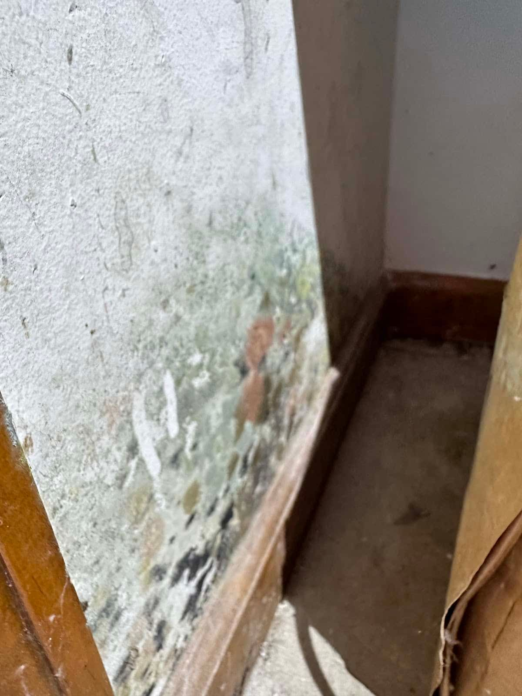

Mold Remediation in Caldwell, ID
Not every mold sighting needs a full remediation. Some does, urgently. This scale walks through the levels we see in Caldwell homes, from surface spotting a homeowner can handle to growth in the framing.
- Older homes
- Rentals
- Crawlspaces
- Creek-side lots

Five levels of household mold
Our own rough scoping guide — not an official standard.
Surface spotting
Small dots on shower grout, window frames or a single spot on a painted wall. Clean it, improve ventilation and watch it.
Recurring patch
Comes back in the same place within weeks. There’s a moisture source behind or near it. Find it before cleaning again.
In the material
Drywall is soft or stained through, or a baseboard has growth behind it. Professional removal with containment is recommended.
Spread across an area
More than about ten square feet, across multiple walls or a crawlspace. Full containment, negative air and clearance needed.
Structural or HVAC
Growth on framing, joists, subfloor or inside ductwork. Larger remediation project with possible structural repair.
Level 3 or higher?That’s the point where professional remediation is the safer choice. Get it assessed.
Call (321) 985-3339What usually moves mold up the scale
In Caldwell, it’s most often time. A leak under a sink in a rental that goes unreported, a crawlspace near Indian Creek that floods a little each spring, or an old bathroom with no fan that’s been repainted three times. Each starts at Level 1 or 2 and moves up over months.
If you’re a tenant, report early and in writing. If you’re a landlord, a quick assessment at Level 2 costs far less than remediation at Level 4. The Caldwell page has a plain-language overview of who usually handles what.
Common questions
Can I clean Level 1 or 2 mold myself?
Generally yes, on hard surfaces, with gloves, eye protection and ventilation, as long as the moisture source is fixed. Don’t dry-brush or sand. Wipe with soapy water and dry thoroughly.
How do I know if it’s inside the wall?
Soft or crumbly drywall, peeling paint, a strong musty smell or moisture readings above normal all point to growth inside the material.
Do you serve Caldwell rentals?
Yes. Landlords, property managers and tenants can all call us for help.